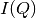
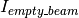
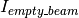
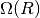
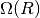
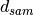
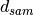

BilbySANSDataProcessor dialog.
Table of Contents
BILBY SANS data reduction. Converts a workspace in wavelength into a 1D or 2D workspace of momentum transfer, assuming elastic scattering.
| Name | Direction | Type | Default | Description |
|---|---|---|---|---|
| InputWorkspace | Input | MatrixWorkspace | Mandatory | Particle counts as a function of wavelength |
| InputMaskingWorkspace | Input | MatrixWorkspace | Mask for the scattering data | |
| BlockedBeamWorkspace | Input | MatrixWorkspace | Blocked beam scattering | |
| EmptyBeamSpectrumShapeWorkspace | Input | MatrixWorkspace | Mandatory | Empty beam transmission, where only a given wavelength slice is considered |
| SensitivityCorrectionMatrix | Input | MatrixWorkspace | Detector sensitivity calibration data set | |
| TransmissionWorkspace | Input | MatrixWorkspace | Mandatory | Sample transmission workspace |
| TransmissionEmptyBeamWorkspace | Input | MatrixWorkspace | Mandatory | Empty beam transmission workspace |
| TransmissionMaskingWorkspace | Input | MatrixWorkspace | Mandatory | Mask for the transmission data |
| FitMethod | Input | string | log | Function to use to fit transmission; can be Linear, Log, Polynomial (first letter shall be capital) |
| PolynomialOrder | Input | string | 3 | Used only for Polynomial function, but needed as an input parameter anyway |
| ScalingFactor | Input | number | 1 | Attenuating factor |
| SampleThickness | Input | number | 1 | Thickness of sample |
| BinningWavelength | Input | dbl list | Mandatory | Wavelength boundaries for reduction: a comma separated list of first bin boundary, width, last bin boundary |
| BinningWavelengthTransm | Input | dbl list | Mandatory | Wavelengths boundaries for transmission binning: a comma separated list of first bin boundary, width, last bin |
| BinningQ | Input | dbl list | Mandatory | Output Q-boundaries: a comma separated list of first bin boundary, width, last bin boundary |
| Timemode | Input | boolean | True | If data collected in ToF or monochromatic mode |
| AccountForGravity | Input | boolean | True | Whether to correct for the effects of gravity |
| SolidAngleWeighting | Input | boolean | True | If True, pixels will be weighted by their solid angle |
| RadiusCut | Input | number | 1 | To increase resolution some wavelengths are excluded within this distance from the beam center (mm). Note that RadiusCut and WaveCut both need to be larger than 0 to affect the effective cutoff. See the algorithm description for a detailed explanation of the cutoff. |
| WaveCut | Input | number | 1 | To increase resolution by starting to remove some wavelengths below this threshold (angstrom). Note that WaveCut and RadiusCut both need to be larger than 0 to affect on the effective cutoff. See the algorithm description for a detailed explanation of the cutoff. |
| WideAngleCorrection | Input | boolean | True | If true, the wide angle correction for transmissions will be applied |
| Reduce2D | Input | boolean | False | If true, 2D data reduction will be performed |
| OutputWorkspace | Output | MatrixWorkspace | Mandatory | Name of the workspace that contains the result of the calculation. Created automatically. |
| OutputWorkspaceTransmissionFit | Output | MatrixWorkspace | Mandatory | Counts vs wavelength, fit for the sample transmission |
The main equation Bilby is using for the  calculation is the following:

Where  is the measured counts per pixel per wavelength,
 is the intensity of the empty beam collected for
is the measured counts per pixel per wavelength,
 is the intensity of the empty beam collected for  time,
M is a time measure for the data collection,
time,
M is a time measure for the data collection,  is attenuation factor,
 is solid angle,
is attenuation factor,
 is solid angle,  is a detector response function,
is a detector response function,
 is the sample transmission, and  is the sample thickness.
is the sample transmission, and  is the sample thickness.
Details are described in the paper [1]. The core algorithms the BilbySANSDataProcessor is utilising are Q1D and TOFSANSResolutionByPixel. Please refer to those pages for details of the input parameters. The unit of the output workspace is 1/cm. Absolute scale calibration done relatively to the empty beam transmission measurements.
See https://github.com/hortica/Mantid_Bilby/tree/master/example_data_reduction_settings page to download a set of the test input data.
Please note, currently we do not have a User Interface, so we are working with csv lists.
The steps to make the Bilby data reduction work are listed below:
Two csv files, similar to (input_csv_example.csv and mantid_reduction_settings_example.csv) should be created during the experiment; the names can be different, the format (especially the top line in each) must stay the same
Download Mantid from http://download.mantidproject.org/
Open the Script menu in Mantid: press “View”, and then “Script window”; alternalively just press F3
The script below shows an example script to run the Bilby reduction the reduction_settings_file options should be changed to the correct .csv file file and save_files set to true.
from BilbyReductionScript import RunBilbyReduction
run_bilby_reduction = RunBilbyReduction('mantid_reduction_settings_example.csv', '0', '0', 'shift_assembled.csv', False)
output_workspace, transmission_fit = run_bilby_reduction.run_bilby_reduction()
scale, aka attenuation factor 0.0029
| [1] | A. Sokolova, A. E. Whitten, L. de Campo, J. Christoforidis, A. Eltobaji, J. Barnes, F. Darmann and A. Berry (2019). Journal of Applied Crystallography Volume 52 (1) doi: 10.1107/S1600576718018009 |
Python: BilbySANSDataProcessor.py (last modified: 2019-01-18)
Categories: AlgorithmIndex | Workflow\SANS
{kind=link}